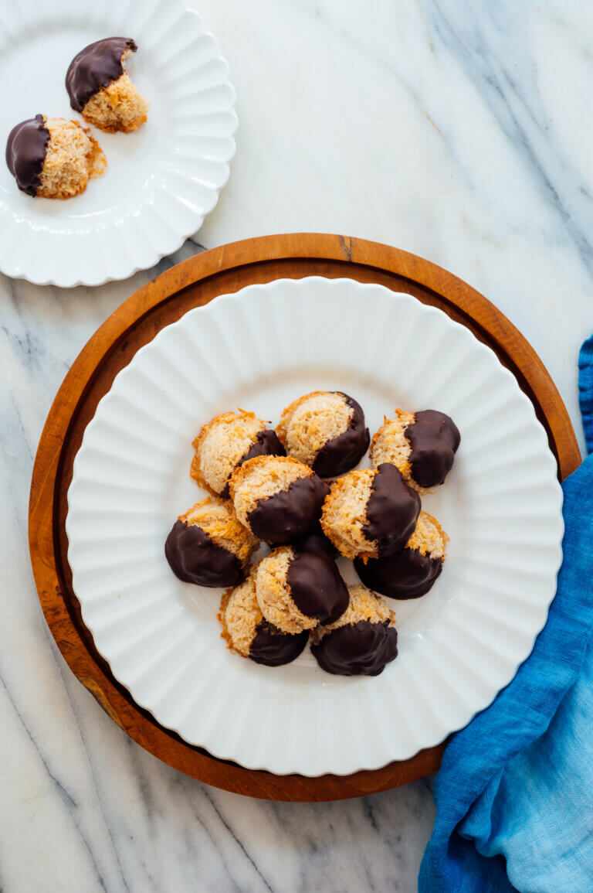

Coconut Macroons Recipe

Description:
These coconut macaroons are the perfect sweet treat.
They’re gluten free and subtly flavored with honey or maple syrup.
Dip them in chocolate if you wish (I recommend it)!
Recipe yields nearly 3 dozen small cookies (34 cookies, by my count).
Ingredients
- 8 ounces (3 cups) unsweetened shredded coconut*
- 1 cup sugar
- ½ teaspoon ground cinnamon
- 3 large egg whites
- 3 tablespoons honey or maple syrup
- 2 teaspoons vanilla extract
- ½ teaspoon fine salt
- 1 cup (6 ounces) semisweet or dark chocolate chips
Steps
- Preheat the oven to 325 degrees Fahrenheit.
Line a large, rimmed baking sheet with parchment paper to prevent the macaroons from sticking to the pan.
- In a medium mixing bowl, combine the coconut, sugar, and cinnamon, and stir to combine. Set aside.
- Combine the egg whites, honey, vanilla and salt in a separate mixing bowl (if you intend to use a hand mixer) or in the bowl of your stand mixer using the whisk attachment.
Beat the egg whites on high until stiff peaks form (if baking at an altitude above 3,000 feet, whip only until soft peaks form).
- Using a silicone spatula, transfer the egg whites to the bowl of coconut.
Gently fold the egg whites into the coconut mixture until combined (don’t overdo it or the egg whites will deflate).
- Using a cookie dough scoop or your hands, scoop out about 1 tablespoon of the coconut mix at a time and gently scrunch it into a round-ish shape (try not to pack the mixture down much if you can help it). Place each macaroon onto the prepared baking sheet. These cookies don’t expand much, so you can arrange them pretty closely together.
Clean up any ragged edges by gently pushing stray bits of coconut back into the mounds.
- Place the baking sheet on the middle rack of the oven and bake for 14 to 15 minutes, until they are turning lightly golden brown on top.
Place the baking sheet on a cooling rack to cool completely.
-
Once the cookies have cooled completely, melt the chocolate chips.
I find it’s easiest to melt the chocolate in the microwave at 20 to 30 second intervals, stirring between each. You can also melt the chocolate over a double boiler or in a glass bowl over gently simmering water.
Stir the chocolate chips until they have completely melted, and remove from heat.
- Lay out a new piece of parchment paper. Dip each macaroon sideways into the melted chocolate, about half way.
Lay on the parchment for chocolate to harden. You can speed up the process by placing the baking sheet in the refrigerator for 10 minutes;
don’t leave the cookies in there for much longer, or the chocolate may develop some condensation.
- Leftover cookies keep well, covered at room temperature, for up to 4 days, or freeze for several months.
Back to Main Page